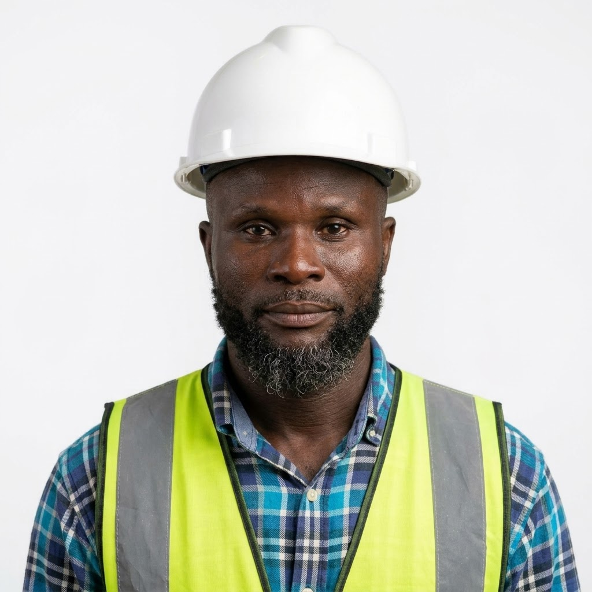

Hello, I'm Engr Seun.
Welcome to my academic portfolio. Hi, I'm Engr Seun, a civil engineer by day and a software engineering student at Miva Open University by night. I spend my days designing and overseeing real structures, and my evenings learning to build digital ones. This mix gives me a practical, detail-driven approach to software: I plan carefully, test thoroughly, and build things that hold up in real-world use.
I'm especially interested in tech solutions for the construction industry, such as platforms that connect people with trusted skilled workers. I'm open to collaborations, internships, and projects where engineering and code meet.
